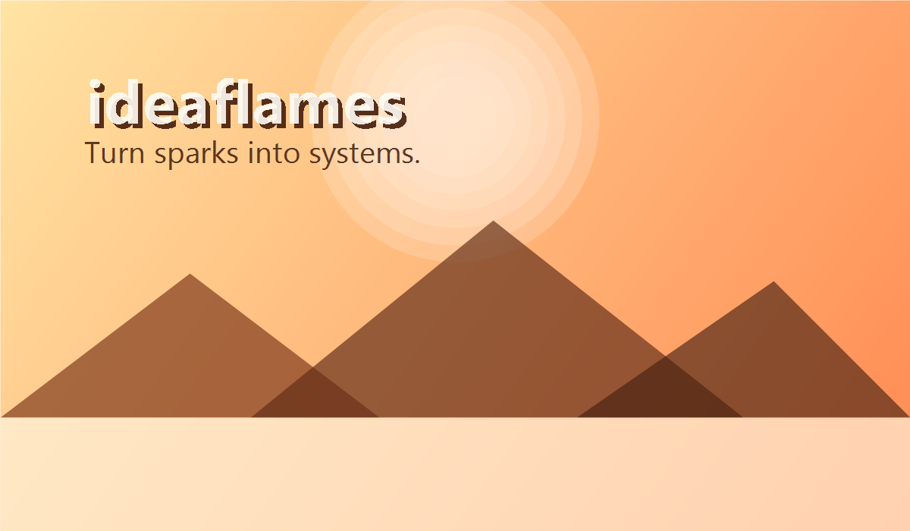
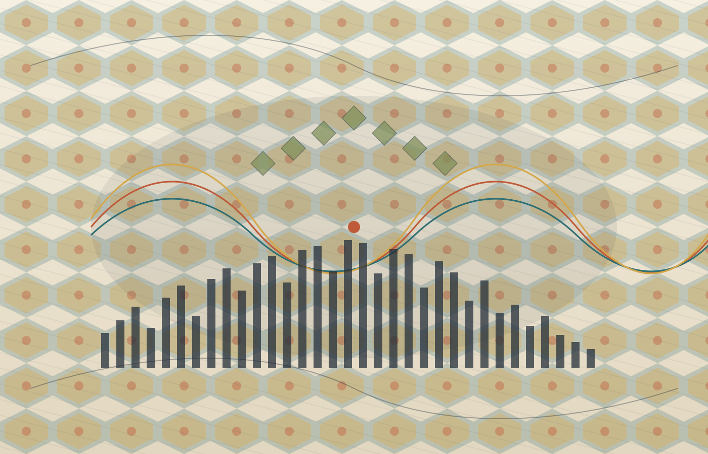
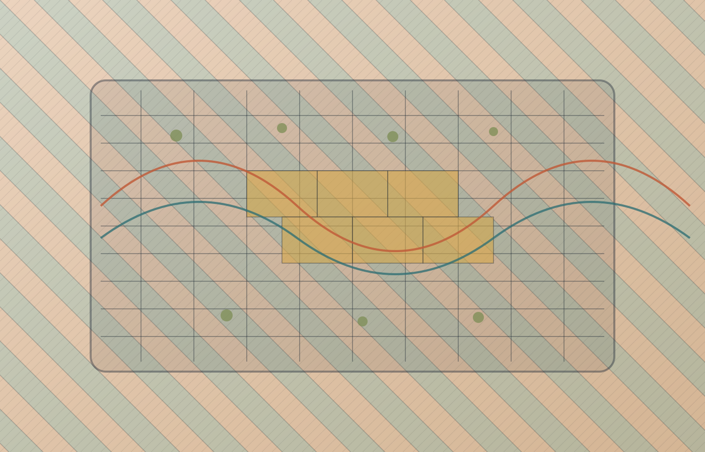
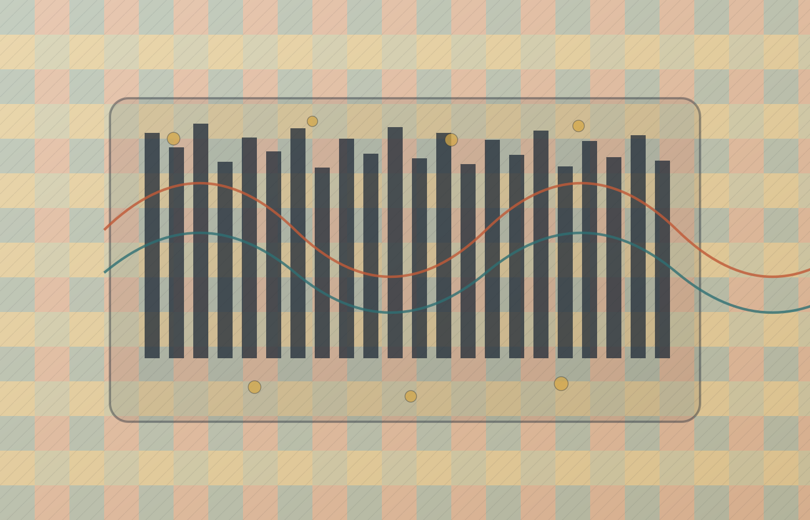
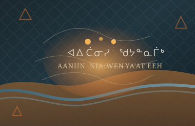
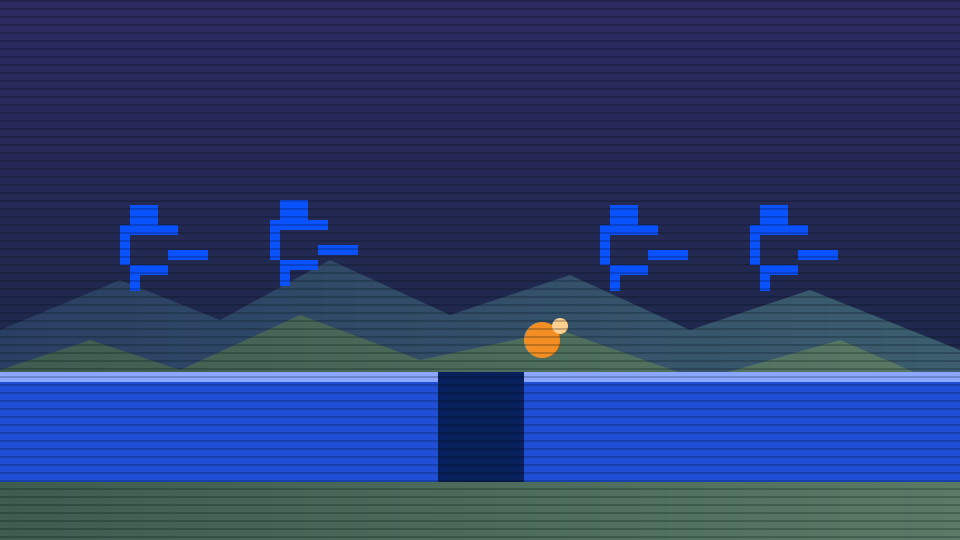

GPU Gravity Physics Simulator
Watch thousands of particles orbit and collapse under gravity on the GPU.
Open Gravity SimulatorSpark ideas. Build momentum. Ship what matters.

"Big outcomes begin as tiny sparks. Protect the spark, then feed it every day."
Explore real-time visual experiments powered by the browser.
Watch thousands of particles orbit and collapse under gravity on the GPU.
Open Gravity Simulator
See waveforms transform in real time as Fourier-domain filters are applied.
Open Fourier Lab
Load random NASA GIBS imagery tiles and inspect their Web Mercator footprint.
Open Mercator Visualizer
Pull a random English article from current events and read it with smooth vertical or horizontal phrase scrolling.
Open Wiki ReaderExplore wisdom from Sun Tzu, Feynman, Buffett and more — karaoke-style bouncing ball, WebGL effects, Google Fonts, Wikipedia portraits, live search.
Open Quotes
Select Inuktitut, Mohawk, Ojibwe/Chippewa, Cree, Navajo and more phrase drills with bouncing pronunciation guide, phonetic speech, and cultural context notes.
Open Language Lab
Rotoscoped-style pixel runners block, fall through trap doors, and explode once while mountain rumble and chip-era thup-thup steps pulse in sync.
Open Running Men Lab